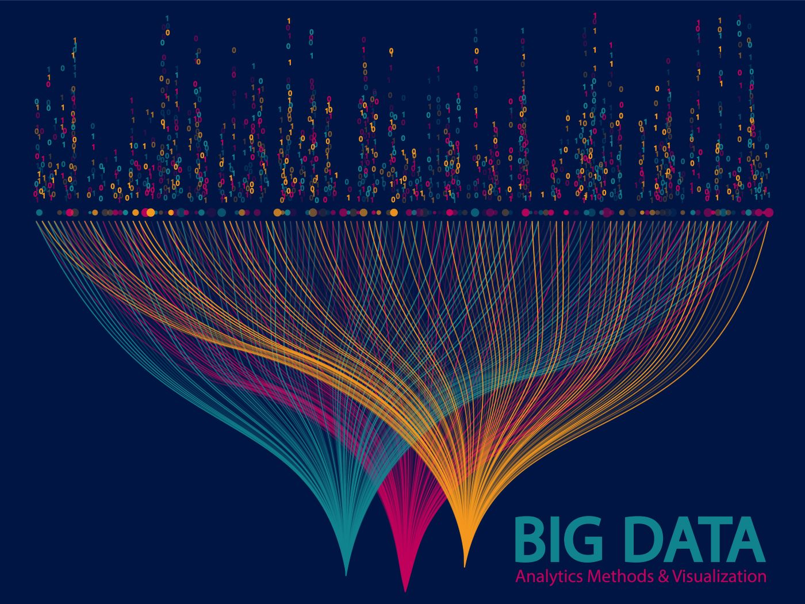

In this project we used Java, Matlab, and Excel to create various statistical information.
We coded various statistical formulas and used test cases to show them.
We also create .png files that Plots data after it smooths or salts it using both
Jfreecharts and the Java Library.

The objective of this project is to clean and preprocess a dataset containing housing data using SQL queries.
The cleaning process aims to ensure data integrity, improve accuracy, and enhance the overall quality of
the housing data.
The objective of this project is to explore and analyze a COVID-19 dataset
using SQL Server. The dataset contains information related to COVID-19 cases,
deaths, recoveries, and other relevant variables. The goal is to gain insights,
identify trends, and extract useful information from the data to understand the impact of the pandemic.
Your internal management system is built to assist managers, employees, and users at “A Brush
Up,” a small family-run painting business. The system is specifically designed to replace
information storage by hand and initiate new ways to store data virtually, in order to get rid of
antiquated corporate practices while boosting productivity and protection generally.
By utilizing Tableau's features and functionalities, the project offers an intuitive and user-friendly interface for exploring and analyzing vaccination and COVID-19 data. Users can interact with the dashboard,
filter information based on their preferences, and gain valuable insights into the progress of vaccinations worldwide.
Overall, this project provides a comprehensive and visually appealing dashboard that effectively communicates vaccination data, population comparisons, and the total death
count for COVID-19. This tool contributes to the understanding of global vaccination efforts and the impact of the pandemic, aiding decision-making and policy planning in the fight against COVID-19.